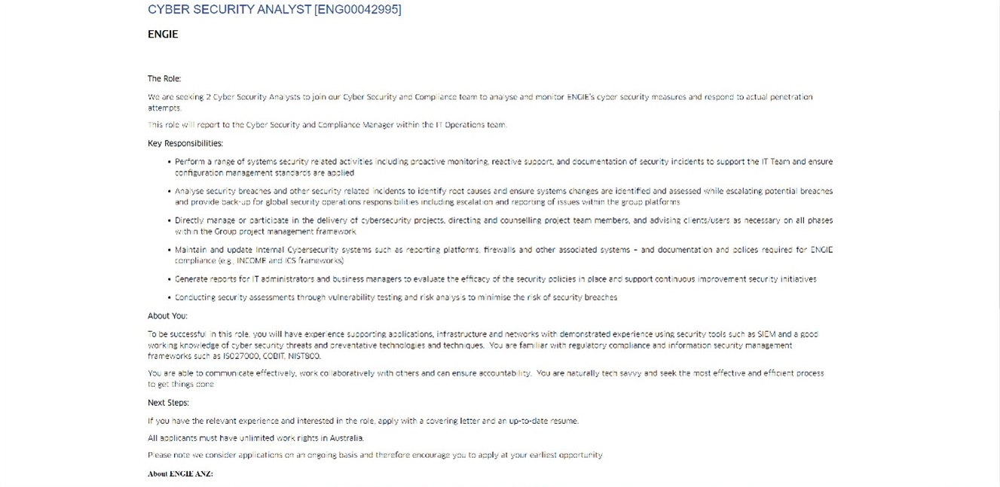
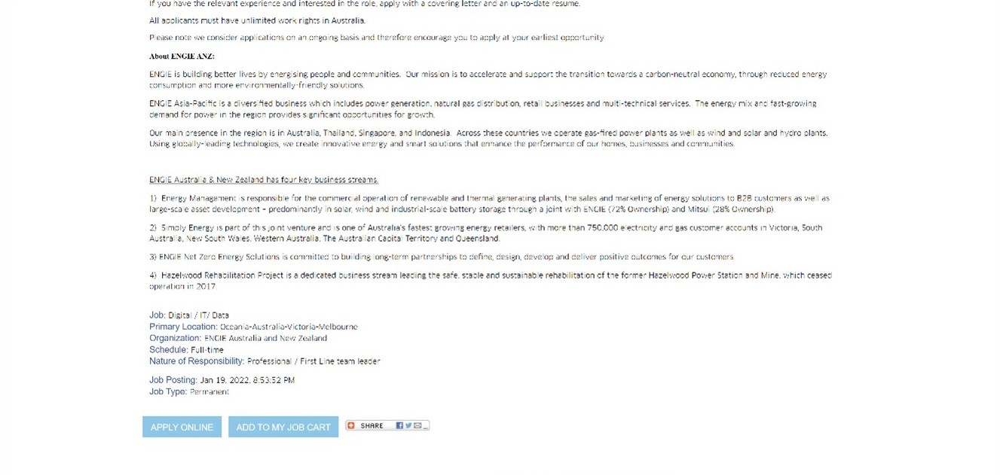

As a cybersecurity analyst, your job involves protecting the company’s assets, more specifically the company’s hardware, software, and networks from loss or unauthorized access. This includes monitoring security incidents that occur over network traffic as well as the support and documentation of said incidents. The generation of reports to IT administrators and business managers is also included. You will also ensure that internet cybersecurity systems are up to date and maintained including reporting platforms, firewalls and other systems. In addition, identify the root cause of cyber security issues, vulnerabilities, and threats that are current or emerging in order to implement mitigation strategies before breaches occur. Escalate these breaches when they do occur. Partake in the delivery of cybersecurity projects including the management of said projects. This can encompass directing and counselling project team members as well as informing and instructing clients/users when necessary. (Engie, 2022).

The job is appealing to me as I am interested in the cyber security field. More specifically the management of cyber systems and prevention of intrusion into said systems. As not only is this applicable to everyday life, but the sophisticated management of these systems is highly interesting as it can encompass many technical skills. These skills can include but are not limited to and penetration testing, scripting, intrusion detection and network security. Knowing I am protecting people’s livelihood and privacy would give me great satisfaction. It is also a job that will keep me learning the most up to date methods of security and keep my mind engaged.

I do not have any qualifications in IT thus Introduction to Programming and Introduction to Information Technology are a base in order to get into the Bachelor of IT. I would then likely need experience in the field before I could attain this position. This could be directly through a graduate cyber security analyst program in addition to cyber security certifications such as Certified Information Systems Security Professional (CISSP) which would require a previous 5 years’ experience in the field to complete. A Master of Cyber Security would be beneficial but is not a requirement for this position. Other certifications do not require such experience and there are even some now I can start such as the IBM cybersecurity analyst professional certificate. Alternatively, I could gain experience in a related field and then transfer across.